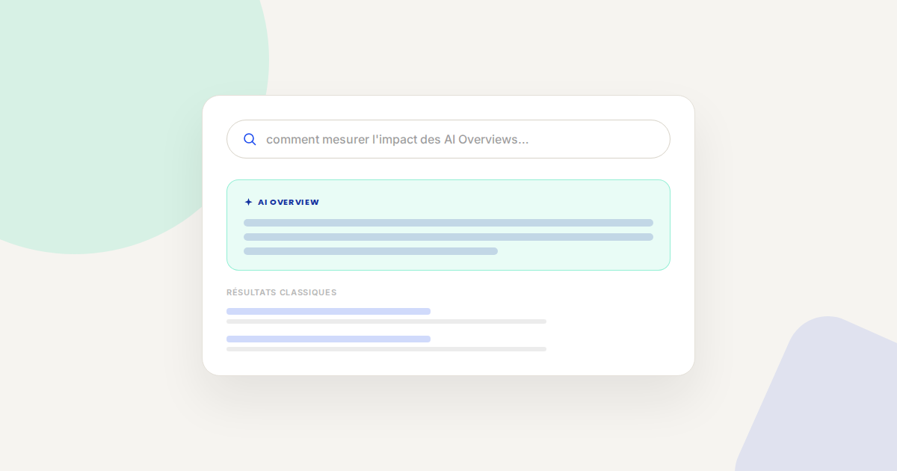
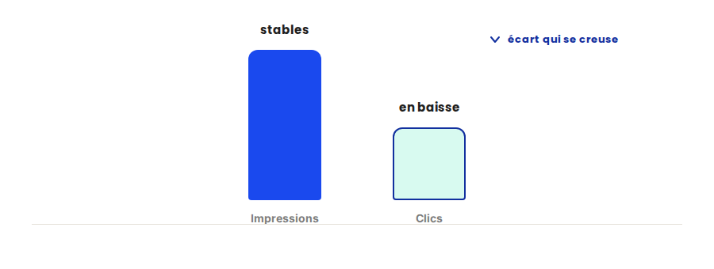

AI Overviews de Google : l'impact réel sur votre trafic SEO (et comment le mesurer)
Depuis que Google a généralisé les AI Overviews sur la majorité des requêtes informationnelles, une inquiétude revient dans presque tous mes audits SEO : « Est-ce que je suis en train de perdre du trafic sans m'en rendre compte ? ». La réponse honnête : ça dépend de vos requêtes, et c'est mesurable — à condition de regarder les bons indicateurs.

Je passe une bonne partie de mes journées entre audits SEO et campagnes d'acquisition. Depuis quelques mois, une question revient systématiquement en début de mission : « Et pour les AI Overviews, on fait quoi ? ». Voici comment je fais le tri entre ce qui reste vrai et ce qui change vraiment.
Ce qui ne change pas
Un AI Overview ne remplace pas un audit technique. Pour être cité, il faut d'abord être indexé, crawlable, et répondre clairement à une intention de recherche — exactement les fondamentaux qui faisaient un bon contenu SEO avant l'arrivée de l'IA générative dans les résultats. Le balisage structuré (Schema.org) continue de jouer le même rôle : aider Google, et un modèle de langage, à extraire une information fiable sans ambiguïté. Une page mal structurée ou mal crawlable n'a aucune chance d'être citée, IA ou pas — un audit SEO reste un audit SEO.
Ce qui change vraiment
- La première position ne garantit plus le clic. Sur une requête informationnelle où un AI Overview s'affiche, l'utilisateur obtient souvent sa réponse sans dérouler la page. Être premier reste utile pour la visibilité de marque et les requêtes transactionnelles, mais le clic n'est plus automatique.
- Ce n'est pas toujours la page n°1 qui est citée. L'IA générative sélectionne le passage qui répond le plus clairement à la question, pas nécessairement la page la mieux classée. Une page en position 4 ou 5 avec une réponse limpide peut être citée avant le n°1 qui noie sa réponse dans trois paragraphes d'introduction.
- La mesure change de nature. Search Console ne distingue pas les impressions liées à un AI Overview de celles d'un résultat classique. Le signal le plus fiable reste indirect : une divergence croissante entre impressions stables (ou en hausse) et clics en baisse sur une requête donnée trahit souvent un AI Overview qui capte l'attention avant le clic.
- L'exposition varie énormément selon le type de requête. Les requêtes informationnelles larges (« qu'est-ce que… », « comment… ») sont les plus concernées. Les requêtes transactionnelles et de marque restent, pour l'instant, largement épargnées.

Un exemple qui illustre bien la différence
Dans les audits que je mène, le cas le plus parlant n'est pas une chute de trafic généralisée — c'est une chute concentrée sur une poignée de requêtes informationnelles, pendant que les requêtes transactionnelles et de marque restent stables. Sans regarder requête par requête, ce signal se noie dans la moyenne du site et peut passer inaperçu pendant des mois, jusqu'à ce que le trafic global commence enfin à en pâtir visiblement.
Ce que ça change concrètement pour votre stratégie SEO
- Segmentez votre suivi par intention de requête. Ne pilotez plus le SEO uniquement à la vue d'ensemble : informationnel, transactionnel et marque ne réagissent pas de la même façon aux AI Overviews.
- Écrivez la réponse avant l'argumentaire. Une phrase déclarative et complète qui répond à la question dès le premier paragraphe — le contexte et la nuance peuvent venir après. C'est ce qui maximise vos chances d'être le passage cité.
- Diversifiez ce qui alimente votre acquisition. Un site trop dépendant du SEO informationnel pur est plus exposé à cette bascule. Le paid, l'email et la notoriété de marque amortissent la variation.
- Suivez l'écart impressions/clics par requête, pas seulement le trafic global. C'est le signal le plus tôt disponible, bien avant que la baisse ne soit visible dans vos chiffres agrégés.
FAQ
Faut-il arrêter d'investir en SEO à cause des AI Overviews ?
Non. Être bien indexé et bien structuré reste la condition pour exister dans les résultats, IA ou pas. Ce qui change, c'est la manière de mesurer le succès — plus seulement en position, mais aussi en visibilité de marque.
Comment savoir si mes pages apparaissent dans les AI Overviews ?
Google Search Console ne le montre pas directement. Le signal le plus fiable reste indirect : surveiller les requêtes où les impressions restent stables ou augmentent pendant que le taux de clic baisse.
Les AI Overviews touchent-ils toutes les requêtes ?
Non, surtout les requêtes informationnelles larges. Les requêtes transactionnelles et de marque sont, pour l'instant, beaucoup moins concernées.
Envie d'y voir clair sur l'impact réel sur votre trafic ?
Pour aller plus loin, voir la page SEO, la page Analytics, et l'audit de visibilité IA.
Pour continuer sur ce sujet.